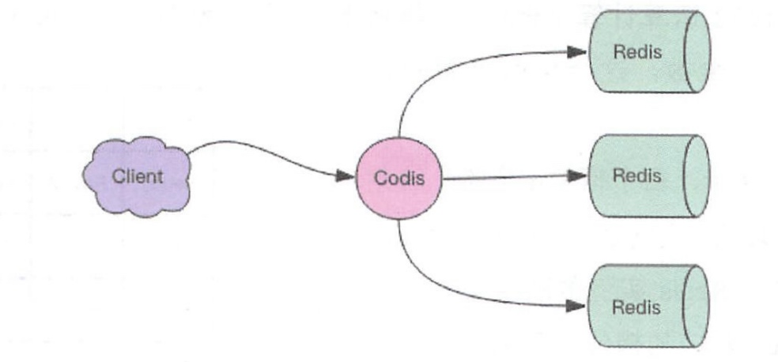
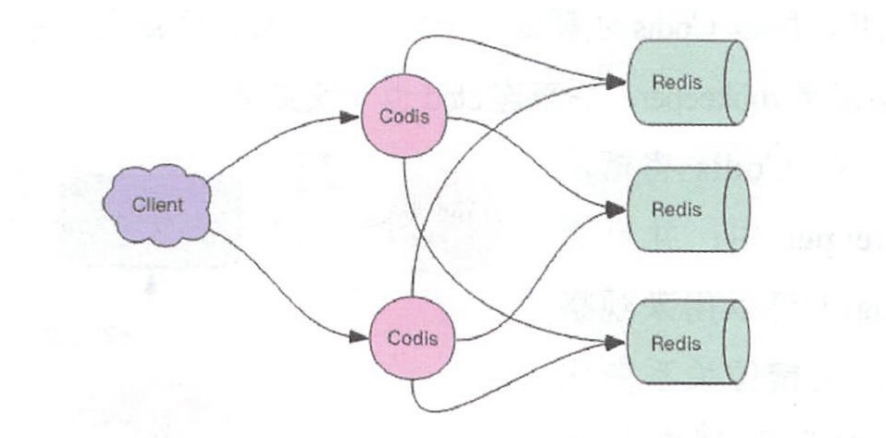
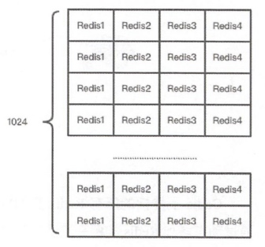
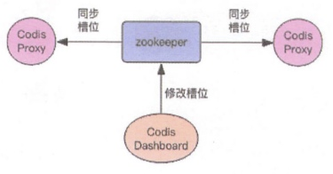

Codis 是 Redis 集群方案之一，令我们感到骄傲的是，它是中国人开发并开源的，来自前豌豆荚中间件团队。
有了 Codis 技术积累之后，项目「突头人」刘奇又开发出来中国人自己的开源分布式数据库 —— TiDB
Codis 使用 Go 语言开发，它是一个代理中间件，它和 Redis 一样也使用 Redis 协议对外提供服务，当客户端向 Codis 发送指令时，Codis 负责将指令转发到后面的 Redis 实例来执行，并将返回结果再转回给客户端。

Codis 上挂接的所有 Redis 实例构成一个 Redis 集群，当集群空间不足时，可以通过动态增加 Redis 实例来实现扩容需求。
客户端操纵 Codis 同操纵 Redis 几乎没有区别，还是可以使用相同的客户端 SDK，不需要任何变化。
因为 Codis 是无状态的，它只是一个转发代理中间件，这意味着我们可以启动多个 Codis 实例，供客户端使用，每个 Codis 节点都是对等的。因为单个 Codis 代理能支撑的 QPS 比较有限，通过启动多个 Codis 代理可以显著增加整体的 QPS 需求，还能起到容灾功能，挂掉一个 Codis 代理没关系，还有很多 Codis 代理可以继续服务。

Codis 分片原理
Codis 要负责将特定的 key 转发到特定的 Redis 实例。Codis 将所有的 key 默认划分为 1024 个槽位(slot)，它首先对客户端传过来的 key 进行 crc32 运算计算哈希值，再将 hash 后的整数值对 1024 这个整数进行取模得到一个余数，这个余数就是对应 key 的槽位。

每个槽位都会唯一映射到后面的多个 Redis 实例之一，Codis 会在内存维护槽位和 Redis 实例的映射关系。这样有了上面 key 对应的槽位，那么它应该转发到哪个 Redis 实例就很明确了。
hash = crc32(command.key)
slot_index = hash % 1024
redis = slots[slot_index].redis
redis.do(command)
槽位数量默认是1024，它是可以配置的，如果集群节点比较多，建议将这个数值配置大一些，比如2048、4096。
不同的 Codis 实例之间槽位关系如何同步？
如果 Codis 的槽位映射关系只存储在内存里，那么不同的 Codis 实例之间的槽位关系就无法得到同步。所以 Codis 还需要一个分布式配置存储数据库专门用来持久化槽位关系。Codis 开始使用 ZooKeeper，后来连 etcd 也一块支持了。

Codis 将槽位关系存储在 zk 中，并且提供了一个 Dashboard 可以用来观察和修改槽位关系，当槽位关系变化时，Codis Proxy 会监听到变化并重新同步槽位关系，从而实现多个 Codis Proxy 之间共享相同的槽位关系配置。
扩容
刚开始 Codis 后端只有一个 Redis 实例，1024 个槽位全部指向同一个 Redis。然后一个 Redis 实例内存不够了，所以又加了一个 Redis 实例。这时候需要对槽位关系进行调整，将一半的槽位划分到新的节点。这意味着需要对这一半的槽位对应的所有 key 进行迁移，迁移到新的 Redis 实例。
那 Codis 如何找到槽位对应的所有 key 呢？
Codis 对 Redis 进行了改造，增加了 SLOTSSCAN 指令，可以遍历指定 slot 下所有的 key。Codis 通过 SLOTSSCAN 扫描出待迁移槽位的所有的 key，然后挨个迁移每个 key 到新的 Redis 节点。
在迁移过程中，Codis 还是会接收到新的请求打在当前正在迁移的槽位上，因为当前槽位的数据同时存在于新旧两个槽位中，Codis 如何判断该将请求转发到后面的哪个具体实例呢？
Codis 无法判定迁移过程中的 key 究竟在哪个实例中，所以它采用了另一种完全不同的思路。当 Codis 接收到位于正在迁移槽位中的 key 后，会立即强制对当前的单个 key 进行迁移，迁移完成后，再将请求转发到新的 Redis 实例。
slot_index = crc32(command.key) % 1024
if slot_index in migrating_slots:
do_migrate_key(command.key) # 强制执行迁移
redis = slots[slot_index].new_redis
else:
redis = slots[slot_index].redis
redis.do(command)
自动均衡
Redis 新增实例，手工均衡slots太繁琐，所以 Codis 提供了自动均衡功能。自动均衡会在系统比较空闲的时候观察每个 Redis 实例对应的 Slots 数量，如果不平衡，就会自动进行迁移。
本文由 Sajor
创作，采用 知识共享署名4.0 国际许可协议进行许可
本站文章除注明转载/出处外，均为本站原创或翻译，转载前请务必署名
最后编辑时间为: 2022-03-23T22:19:38+08:00